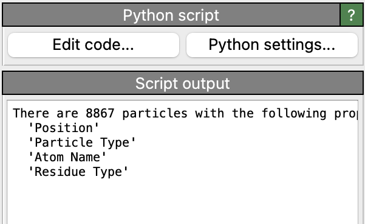
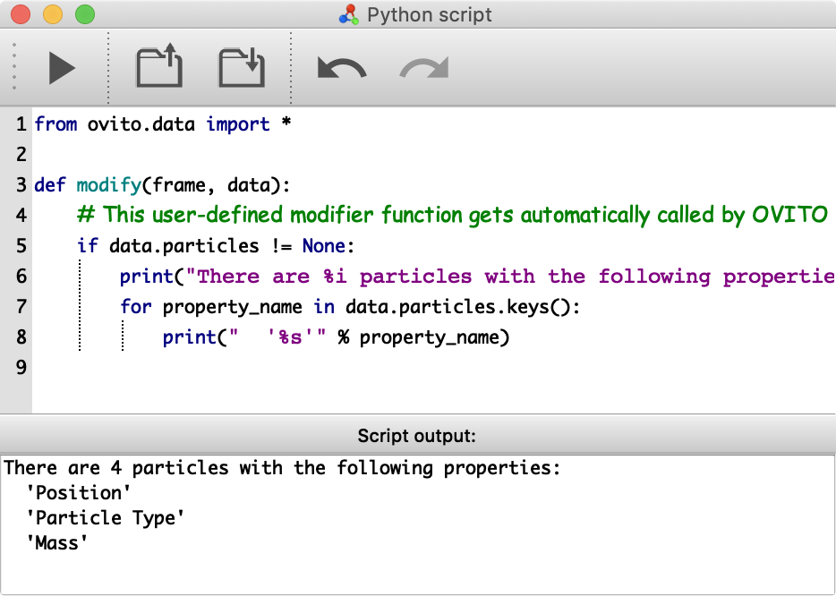
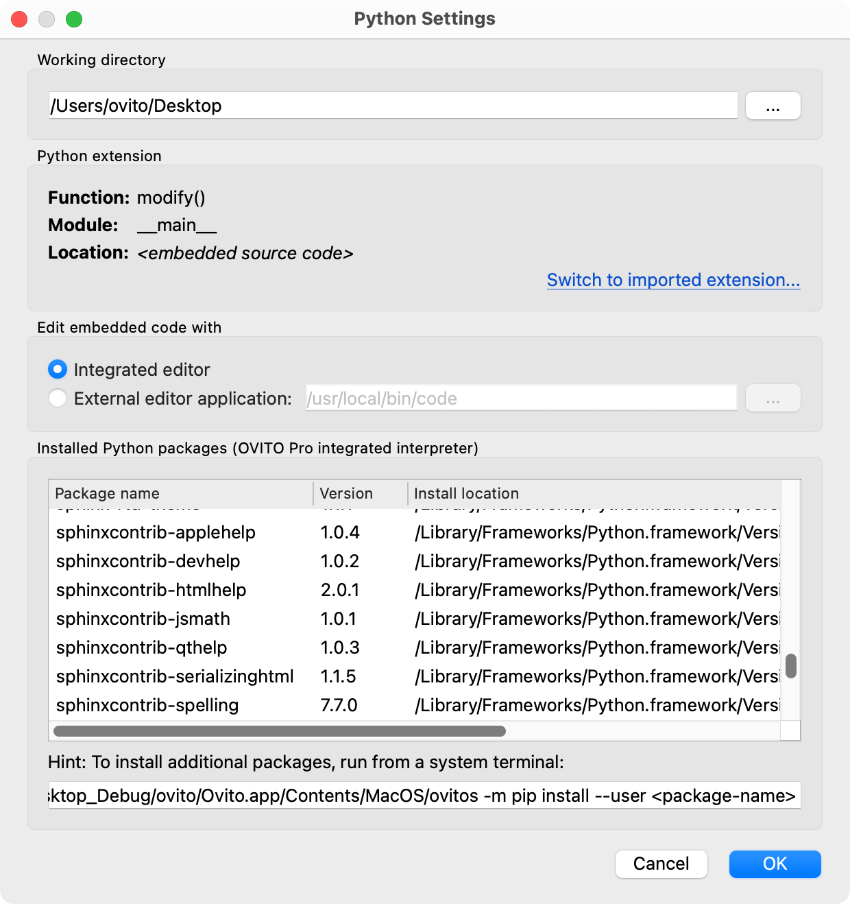

Python script pro
{kind=link}
This type of modifier lets you write your own user-defined modifier function in the Python language. Your Python function will run as part of the data pipeline within the OVITO Pro graphical user interface just like OVITO’s built-in modifiers and can manipulate, analyze, or amend the simulation data in any way you need it. Writing user-defined modifier functions is useful whenever the toolset of built-in modifiers of OVITO is insufficient for solving your specific problem at hand.
What is a Python script modifier?
After you have inserted an instance of the Python script modifier into your pipeline, you have to define a Python function by entering some code into the integrated code editor window of OVITO Pro. For instance:
def modify(frame, data):
print("Number of particles:", data.particles.count)
data.attributes['Time'] = 0.002 * frame
This function prints the current number of particles to the log window and additionally generates a new dynamic attribute named Time.
The attribute’s value is simply computed from the current trajectory frame number. OVITO Pro takes care of executing your Python function at the right times, for example,
whenever you drag the animation time slider and the results of the data pipeline must be recomputed.
When invoked by the pipeline system, your modifier function receives the data to operate on as input argument data. This is a DataCollection produced by the
upstream pipeline, i.e., a particles dataset loaded from disk, which may already have undergone changes by other modifiers preceding your function in the pipeline.
Within the Python function, you can then implement your own data processing algorithms. Use OVITO’s comprehensive Python API to access different parts of the dataset or dynamically add new data objects to it, which will then become visible in OVITO’s interactive viewports.
For a more detailed introduction, please read User-defined modifiers in the OVITO Python documentation.
Usage
{kind=link}
After you have inserted a new Python script modifier into the pipeline in OVITO Pro, you can open an integrated code editor by clicking the Edit code… button. The editor window lets you enter the source code for the user-defined modifier function, which initially consists of some example code. Replace it with your own code to perform the computations or tasks that are needed to solve your specific problem at hand.
Make sure you read the section User-defined modifiers to learn how to write user-defined modifier functions.
Once you are done writing the code of your user-defined modifier function, click the Commit and run script button (with the “play” icon)
in the code editor’s toolbar. This will compile your source code by executing all top-level Python statements and then
triggers an update of the data pipeline. As part of the subsequent pipeline rerun, your modify() function will get invoked by the system
for the first time.
Attention
The pipeline system is going to run your modify() function repeatedly,
for example when stepping through a simulation trajectory to process each frame. That means you should always write your modify() function
in such a way that it doesn’t have any side effects on the global program state.
The function should be “pure” and stateless in the sense that it only touches the data collection provided by the pipeline system and nothing else.
The pipeline system may decide to cache the results of your modifier function, but it may also call your function
repeatedly if necessary, for example, whenever the user changes the upstream pipeline in some way.
In case you want to perform an action via Python script that changes the program state (including the structure of the pipeline itself), e.g., importing another dataset into the scene, adding another modifier to the current pipeline, or performing some data export or image rendering operation, you can do that instead using the menu function.
Turn a custom modifier function into a modifier template in OVITO
First, give your modifier a meaningful name to make it easier for you to identify the modifier in the data pipeline. The pipeline editor of OVITO lets you change the modifier’s title from the generic name “Python script” to a more descriptive name that better summarizes the specific purpose of your Python function. In order to rename the modifier in the pipeline editor, make sure it is selected and then click the list item a second time to start editing its name.
Next, you can save the entire modifier, including the code of your modify() function, as a modifier template.
Modifier templates you’ve created appear as additional entries in the drop-down list of available modifiers, which allows you to easily
access your user-defined modifier function in future program sessions and insert it into other data pipelines.
Installing Python-based extensions for OVITO with pip
This section describes how you can make a modifier function you wrote permanently and/or publicly available as a re-usable tool within OVITO Pro. It also explains how to install Python modifier functions in OVITO Pro that have been authored and published by someone else and are available online. Use this method if you would like to maintain the code of your modifier function outside of OVITO Pro and host it in a version-controlled Git repository, for example.
Extension scripts for OVITO Pro should be packaged and installed with the pip utility program. The process is explained
in more detail in the Packaging and installation of user extensions for OVITO section of the OVITO Python scripting manual.
After the extension author has completed these steps, and the Python extension has been uploaded on
GitHub or the PyPI package repository, the extension can be installed in your environment using the command line interface.
To make an extension package available within OVITO Pro, it must be installed in the integrated Python interpreter of OVITO Pro
by running pip install via ovitos on the command line. Here we assume your extension package is hosted online in a Git repository
publicly accessible via https protocol:
ovitos -m pip install --user https://<repository_url>/<branch>/archive.zip
After installing the extension package, the custom Python modifier will be automatically discovered by OVITO Pro and added to the modifiers dropdown menu once you restart the program.
If you are working in a Conda environment or are using an external Python interpreter,
you can run the pip install command directly to install the extension package in that interpreter:
pip install --user https://<repository_url>/<branch>/archive.zip
Note that, in your Python program using the OVITO Python module, you need to import the modifier class or modifier function directly from the installed
extension module in order to insert it into a Pipeline. The extension class will not appear as part of the ovito.modifiers
module, which only contains OVITO’s standard modifier classes.
Making modifier functions locally available (deprecated method)
Another option is to simply save the Python code containing your modify() function as a .py source file in one of the following paths on your computer.
OVITO Pro automatically scans these directories at program startup and displays all *.py scripts it finds in the list of available modifiers:
Platform |
Storage location for user-defined modifier scripts |
|---|---|
Linux |
|
Windows |
|
macOS |
|
These directories are not automatically created by OVITO. You have to create them by hand in case they don’t exist yet.
On Linux, note that the standard configuration path ~/.config/ may be overridden by the environment variable XDG_CONFIG_HOME on your system.
On Windows, the ~/AppData/ directory is hidden by default. To access it, you may have to enable the option Show hidden files, folders, and drives in
the Windows Explorer settings.
Code examples
The OVITO Python manual contains several examples that demonstrate how to write modifiers in Python:
See also
ovito.modifiers.PythonModifier (Python API)
Python Settings dialog
{kind=link}
This dialog window lets you inspect and configure several aspects of a Python-based extension that you are working with in OVITO Pro, for example, Python modifiers, Python viewport layers, Python pipeline sources, or Python-based file readers.
Working directory specifies the file system location on your computer that should be used as the current working directory while executing the Python script. This setting is optional and only plays a role if your script performs I/O operations using relative file paths, which will be resolved with respect to the current working directory.
The panel Python extension displays information about the Python code object for the current extension and whether it is defined in embedded source code or in an installed extension module.
Note
OVITO Pro distinguishes between embedded extensions and imported extensions.
Embedded extensions are written by you during a program session and may be lost when you close OVITO Pro – unless you save them as part of a session state file or a modifier template as described above. They are typically simple, ad-hoc Python functions.
Imported extensions, on the other hand, may be more complex and live in .py code files in Python modules – installed in the Python interpreter that is being used by OVITO Pro.
Such extensions always remain available, even across program sessions. OVITO Pro already includes several such extensions, e.g., its Python-based modifiers,
which are part of the OVITO Python module. Additionally, you can install user extension modules that were
developed by you or others, and which seamlessly integrate into the OVITO Pro GUI.
See also Packaging and installation of user extensions for OVITO and the OVITO Extensions Directory.
The option Edit embedded code with only applies to embedded extension code developed within OVITO Pro and not imported from an external Python module. The option selects what the button Edit code… should do: OVITO Pro can open a simple integrated code editor, or you can let OVITO Pro start up an external text editor or Python IDE (e.g. Visual Studio Code), which provides a better coding experience. OVITO Pro will automatically re-run your source code whenever you save it in the external application and switch back to the OVITO Pro window.
The bottom panel of the dialog window lists all Python packages that are currently installed in the OVITO Pro environment and which may be imported and used by your Python extension scripts. Note that regular installations of OVITO Pro use an embedded Python interpreter, which manages its own set of Python packages independent from your system’s Python interpreter. Thus, installing additional packages from the PyPI repository requires a special pip command, which is displayed below the package list for your convenience. If you are working with the Conda version of OVITO Pro, the program uses Conda’s Python interpreter and you can make additional Python packages available simply by installing them in the same Conda environment as OVITO Pro.